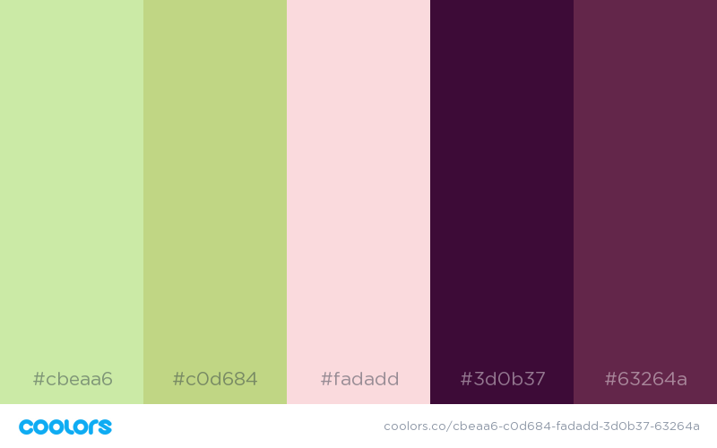
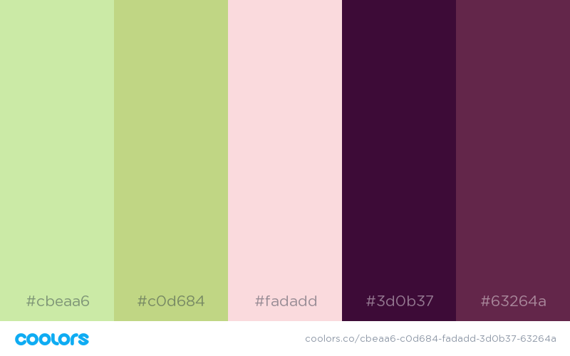

Color Scheme
This is the color scheme I chose:
I chose it for it's light friendly color, while still keeping some of the natural and child-like colors of nature.

This is the color scheme I chose:
I chose it for it's light friendly color, while still keeping some of the natural and child-like colors of nature.